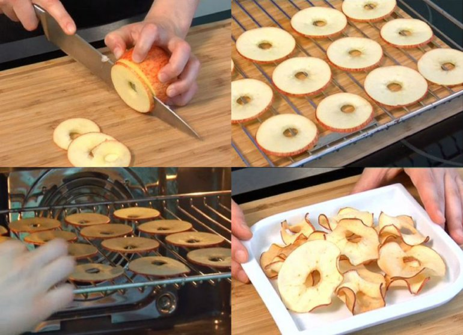

Receptes kur izmanto ābolus un ogas.
1.Nr
Ābolu čipši

Ābols
Attīri ābolu no serdes un sagreiz plānās šķēlītēs.
Uzsildi krāsni līdz 120 grādiem un liec iekšā ābolus. Gatavot apmēram pusotru stundu.
Pirms liec ābolus krāsnī, vari pārbert tos ar kanēli un cukuru.
>
2.Nr
Nosaukums
pirmais ingredients
otrais ingredients
treišais ingredients
recepte